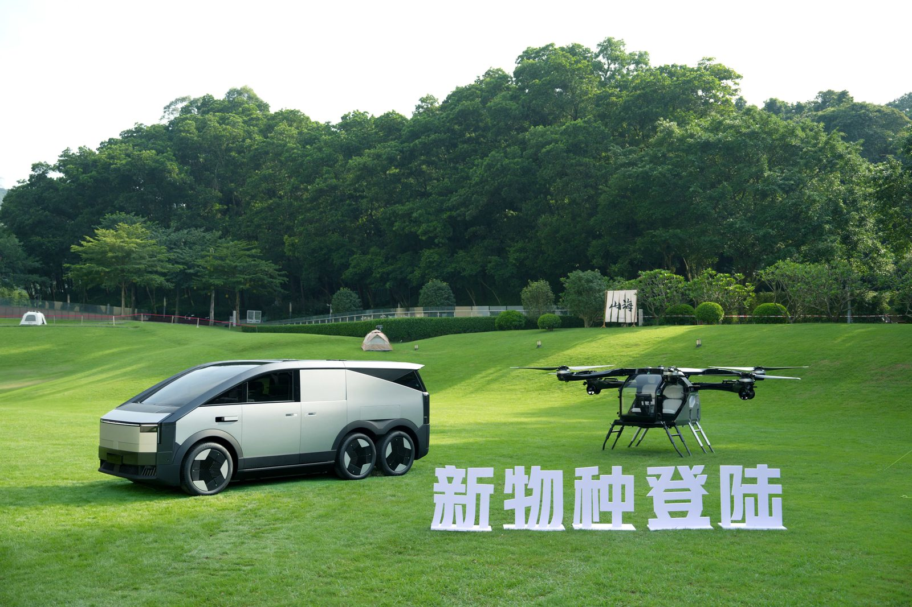
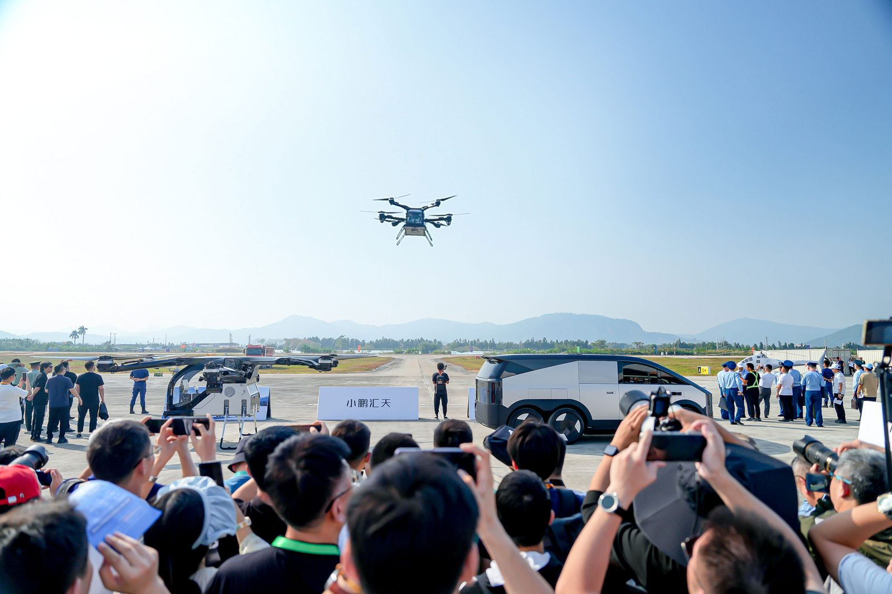
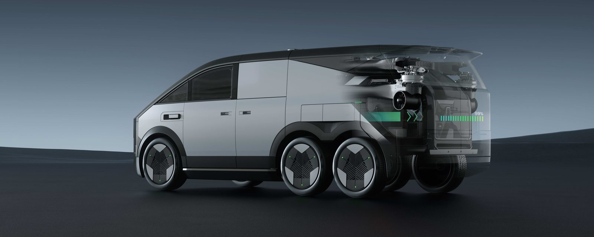
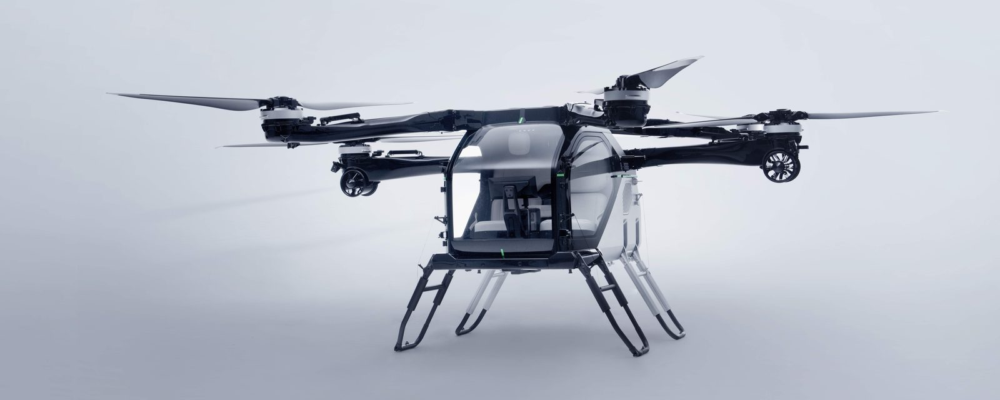
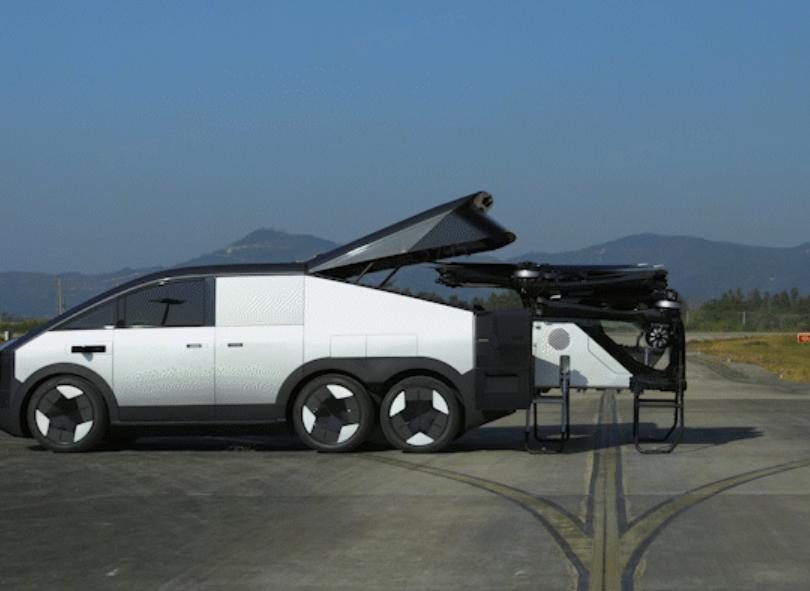
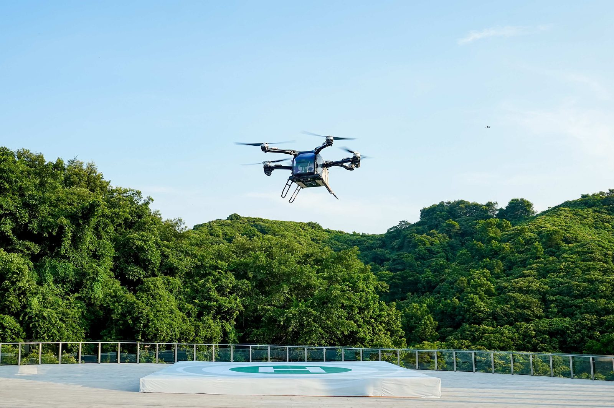
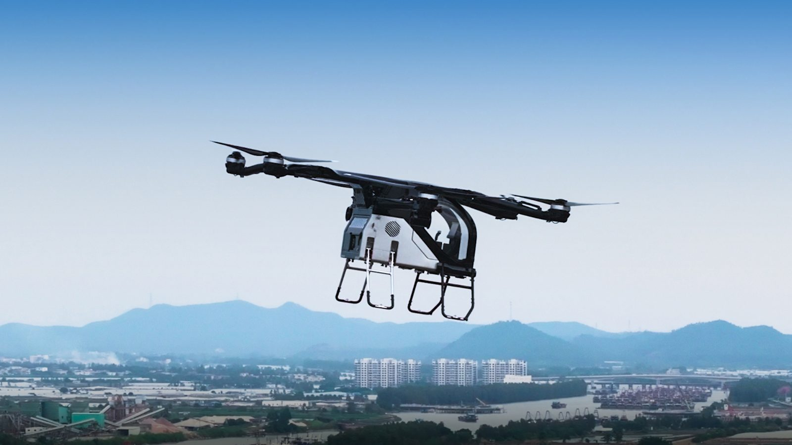
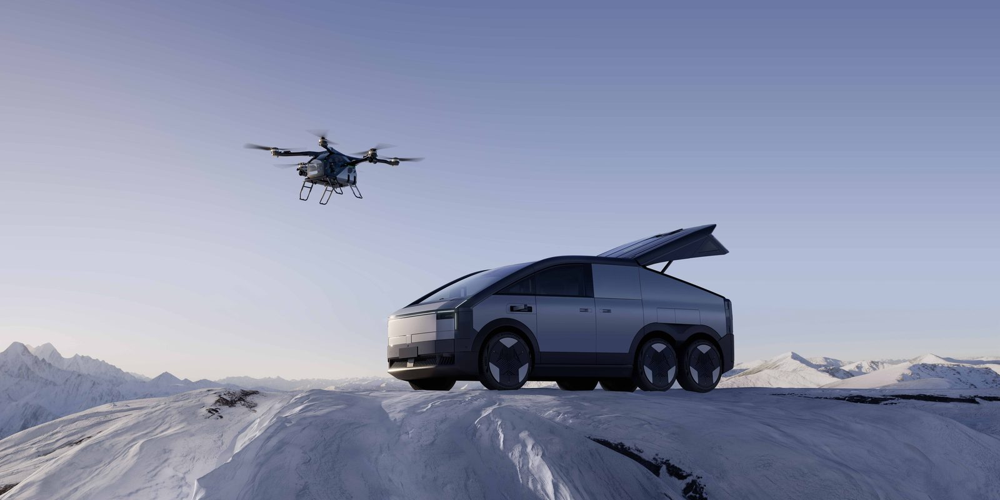
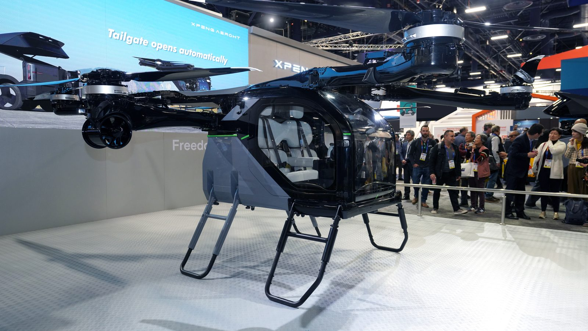

00执行摘要Executive Summary
- "陆地航母"是小鹏汇天（2025 年 10 月后海外品牌名 Aridge）研发的分体式飞行汽车，由增程式陆行"母舰"与纯电动双人飞行体两部分组成，属于课程讲义中广义飞行汽车划分里的分体式产品形态，而非两栖式或纯飞式 eVTOL。[1][9][10] The Land Aircraft Carrier is a modular flying vehicle comprising a range-extended ground mothership and a battery-electric two-seat air module — the modular class in the course taxonomy, not an amphibious car or a pure eVTOL.
- 目前证据支持的稳妥表述是："一台已完成多轮公开演示、进入试产与审定流程的分体式工程样机系统"；它尚不是"已取得型号合格证、可面向公众交付载人飞行的运营航空器"。飞行体型号合格证（TC）申请已于 2024 年初获中国民航局受理，生产许可证（PC）申请于 2025 年 5 月受理，截至证据截止日尚未完成取证交付。[3][6][7] Evidence supports describing it as a modular engineering system with repeated public demonstrations, pilot production and certification progress — not yet a certified, deliverable passenger aircraft.
- 产品工程上最核心的创新是全球首创的车载自动分合机构：一键完成飞行体与陆行体的分离、收纳与精准对接，涉及两套载体 8 大控制模块、14 个作动机构；陆行体同时承担运输、存储与移动补能平台角色，满油满电可为飞行体提供约 6 次补能。[1][2] The defining engineering feature is the world-first automatic vehicle-to-aircraft docking mechanism across eight control modules and fourteen actuators; the mothership also serves as transport, hangar and mobile charging platform.
- 技术可行性应拆成三层看：演示可行（垂直起降、预设科目飞行、自动分合已公开验证）、工程化待验证（抗风扰动、故障重构、复材与电池循环寿命、维护周转缺少公开数据）、运输化未证明（可重复任务航程、全天候运行与商业载客许可尚未落地）。[10][17] Technical feasibility splits into demonstrated capability, engineering-unverified items, and transport-unproven claims.
- 市场可行性应视为"高端限定场景体验 + 公共服务示范"的早期业务，而不是城市通勤大众市场。超前预订订单在 2025 年 1 月披露为 3000 台以上，2025 年 11 月第三方汇总口径超过 7000 台；媒体披露整车价格区间在 200 万元人民币以内，但订单、订金与最终交付转化不能等同。[3][7][8] Market feasibility is an early premium, restricted-scenario business rather than a mass urban-commute market; pre-orders are demand signals, not confirmed revenue.
- 对本课程作业最重要的启示是：产品传播冲击力越强，越需要证据表。一次精彩的公开飞行不能替代飞行包线、安全目标、监管路径与全寿命成本；每个数字都应回到来源，每个推论都应注明前提。[9] The stronger the media impact, the more necessary an evidence table: a spectacular flight cannot replace the flight envelope, safety case, regulatory path and lifecycle cost.
01研究设计与证据边界01 Research Design and Evidence Boundary
本文采用"系统综述式案例评估"，而非宣称完成多评审员、全数据库覆盖的正式系统综述。研究过程包括问题界定、检索协议、来源分级、证据矩阵、工程评估与敏感性分析。研究对象限定为小鹏汇天分体式飞行汽车"陆地航母"整车族（陆行体 + 飞行体），时间范围为 2013 年汇天成立至 2026 年 11 月 25 日。 This is a systematic-review-informed case assessment, not a fully exhaustive multi-reviewer review. It combines problem framing, a search protocol, source grading, an evidence matrix, engineering assessment and sensitivity analysis, covering the Land Aircraft Carrier family from 2013 to 25 November 2026.
检索覆盖小鹏汽车与汇天官方发布、地方政府门户、券商研报、第三方行业媒体、CAAC/EASA/FAA 监管文件、ISO 标准、同行评审论文与行业研究报告。最关键的边界是：公开演示与展会静态展示能够支持"完成了预设起降与飞行动作、实现了自动分合"这一观察，但不能自动证明持续航程、抗风等级、安全完整性、可靠度、适航符合性或量产一致性。[1][2][10] Public demos and static displays support observed takeoff, preset maneuvers and docking; they do not by themselves establish endurance, wind tolerance, safety integrity, reliability, airworthiness compliance or production consistency.
检索与筛选记录 Search and screening record
| 来源类别 Source class | 检索策略 Query strategy | 用途 Use |
|---|---|---|
| 小鹏官方OEM official | "陆地航母"；XPeng AeroHT Land Aircraft Carrier；汇天 1024 科技日 | 确认构型、演示、版本与产品定义 |
| 政府与监管Government / regulator | CAAC 受理；TC / PC / TIA；UAE GCAA 特殊飞行许可；地方产业门户 | 确认审定进程与本地化条件 |
| 行业研究Industry research | 飞行汽车发展报告 2.0；低空经济产业链；eVTOL 市场研究 | 建立场景、产业链与市场基线 |
| 标准与论文Standards / papers | ISO 26262；ISO 21448；ISO 34502；SC-VTOL；powered-lift；FCTS 综述 | 解释功能安全、SOTIF、适航与运行约束 |
| 竞品对照Competitors | Joby S4；Archer Midnight；EH216-S；Alef Model A；Tesla Roadster Rocket | 比较产品类别、验证路径与商业逻辑 |
纳入标准包括：与"陆地航母"项目直接相关；能够解释分体构型、分合机构、冗余安全、低空运行、市场或公众接受度；来源可追溯且发布时间可确认。排除标准包括：无法定位原文的二次转述；把渲染图、影视特效或粉丝想象当成产品证据；没有出处却声称飞行高度、航程或价格的网络帖子；以及用"万亿低空市场"直接推导单款产品销量的营销材料。[9][11]
02发展路径：从分体概念到试产下线02 Development Path: From Modular Concept to Pilot Production
汇天成立于 2013 年，是小鹏汽车生态企业，也是目前亚洲规模较大的飞行汽车公司之一。2023 年 10 月，公司首次公布正在研发的分体式飞行汽车"陆地航母"；此后约一年时间内，产品经历了概念公布、实车亮相、公开飞行、海外展出、工厂建设与试产下线等节点。[1][3] Founded in 2013 as an XPeng ecosystem company, AeroHT revealed the modular Land Aircraft Carrier in October 2023; the following year ran through reveal, first public flight, overseas debut, factory build-out and pilot roll-out.


从创新管理角度看，同一名称下同时存在三种形象：2023 年公布的分体概念、随发布不断扩展的技术愿景，以及 2025—2026 年进入试产的工程样机。三者并不完全等同。早期概念回答"能否把飞行器收纳进汽车"；技术愿景回答"车机如何协同补能与运行"；试产样机回答"这套系统能否按航空级质量标准批量制造"。任何研究都必须注明日期，不能把不同阶段的口头承诺合并成一张规格表。[10] Three coexisting images — concept, vision and pilot prototype — must not be merged into a single spec sheet; every claim must be dated.
03版本与产品定义：一台母舰，一个飞行体03 Product Definition: One Mothership, One Air Module
"陆地航母"在产品定义上不是单一载具，而是"陆行体 + 飞行体"的分体系统：陆行体负责地面通行、存储与补能，飞行体负责低空飞行。两者共享品牌与分合机构任务，但工程目标、法规身份和成本结构不同。需要区分的是，汇天"三步走"战略中的第二步高速长航程全倾转 eVTOL（A868）与第三步陆空一体式产品，不属于本型号。[1][8] The product is a two-part system: the ground mothership handles driving, hangaring and charging; the air module handles low-altitude flight. The separate tilt-rotor eVTOL and future integrated car-plane are different products in the three-step strategy.
| 组成 Module | 官方定位 Positioning | 关键配置 Key configuration | 证据状态 Evidence status |
|---|---|---|---|
| 陆行体 陆行"母舰"Ground mothership |
地面运载、存储与移动补能平台；陆地行驶按道路车辆管理Ground transport, hangar and mobile charging; road-vehicle regulation | 三轴六轮、6×6 全轮驱动与后轮转向；长约 5.5 m、宽约 2 m、高约 2 m，可入标准车位与地库，C 照驾驶；车内大四座；800V 碳化硅增程动力平台，综合续航超 1000 km；六轮主动悬架双级缓冲；可作为移动超充站，满油满电支持约 6 次飞行补能。[1][4] | 官方披露 |
| 飞行体 X3-F 飞行器Air module |
双人低空飞行平台；航空器身份按民航适航体系审定Two-seat low-altitude aircraft; certified under aviation regime | 六轴六桨双涵道构型，机臂与桨叶可折叠；碳纤维机身主体与桨叶；270° 全景双人座舱；全域 800V 碳化硅高压平台（电池、电驱、电涵道、压缩机）；手动单杆 + 自动飞行双模式；动力、飞控、供电、通信、操控全域冗余。[1][2] | 演示 + 受理，取证中 |
| 分合系统Docking system | 车—机自动分离、结合与收纳机构Automatic release, mate and stowage | 全球首创车载自动分合机构，手机或智能钥匙一键操控，约 5 分钟完成收纳或释放；涉及陆行体、飞行体 8 大控制模块、14 个作动机构；超高精度泊车与高稳定运动协调配合。[2] | 官方披露 + 演示 |
把整套系统统称为"飞行汽车"会掩盖关键差异：陆行体的核心是车辆纵向动力学、承载与增程能耗；飞行体的核心是旋翼升力、姿态控制、冗余飞控与适航符合性；分合系统的核心是对接精度、运动协调与结构锁止。研究市场与成本时，也应建立分层模型：车辆平台、飞行器平台、分合机构、能源与补能、控制与软件、测试认证、运行支持、保险与召回准备金，不能用整车售价除以旋翼数量来估算成本。[10] The mothership, air module and docking system have different engineering goals and cost structures; a layered cost model is required rather than a per-rotor price division.
04系统架构与关键技术04 Architecture and Key Technologies
依据课程讲义对飞行汽车整车架构的划分，系统主要包括飞行驱动系统、地面行驶系统、复材机身、能源系统、航电系统、控制系统、智能驾驶及通信系统。下图按公开信息重构"陆地航母"的系统边界；虚线边界之外的监管与场地约束，和车内硬件同等重要。未公开的控制拓扑与安全机制不在图中臆测。[9][10] The architecture below is reconstructed from public information along the course framework; external regulatory and site constraints matter as much as onboard hardware. Undisclosed control topology and safety mechanisms are not invented.
陆行体平台 Ground platform
- 车身 / 大四座座舱
- 三轴六轮底盘与主动悬架
- 800V SiC 增程动力
- 后轮转向与越野承载
飞行体平台 Air platform
- 碳纤维机身与折叠机臂
- 六轴六桨双涵道旋翼
- 全域 800V 电驱 / 电涵道
- 飞行电池与热管理
分合机构 Docking mechanism
- 8 大控制模块 / 14 作动机构
- 高精度泊车与运动协调
- 结构锁止与双级缓冲
- 车载移动补能接口
感知与控制 Perception & control
- 单杆操纵与姿态保护
- 自动航线规划与一键返航
- 全向融合感知 / 降落辅助
- 冗余飞控与故障降级
能源链路 Energy chain
- 增程器 + 车载储能
- 行驶 / 静置均可补能
- 飞行体高压平台快充
- 电池循环与状态监测
外部约束 External constraints
- 道路车辆法规与驾照
- 空域分类与适航审定
- 营地 / 起降场与人员隔离
- 噪声、隐私与社区接受度

4.1 分体式构型：把四个痛点拆开解决 4.1 Why the modular split
传统载人航空器面临"移动难、存储难、补能难、学习难"：飞机需要机库与专用场地，转场依赖地面拖车，补能依赖场站，操纵需要长期训练。"陆地航母"的思路是把任务拆开——由陆行体解决地面移动、存储与补能，由飞行体专注低空飞行；飞行体收纳后，整车在道路形态上接近一台大型 MPV。[1]这一思路与课程讲义中"分体式把飞行器与地面车分离，却增加运营流程"的判断一致：分体降低了单机对专用机场的依赖，但车—机对接、转运固定、地面调度成为新增工程问题。[10] The split separates ground mobility, hangaring and charging from flight itself; it reduces airport dependence but adds docking, securing and ground-handling engineering problems.
4.2 动力与能源：800V 高压平台与增程补能 4.2 Powertrain and energy
陆行体搭载 800V 碳化硅增程动力平台，综合续航里程超 1000 km，以延长地面转场半径；飞行体搭载全域 800V 碳化硅高压平台，飞行电池、电驱、电涵道、压缩机均为 800V 等级，目标是降低能耗、提高充电速度。陆行体在行驶中或停车时均可向飞行体大功率补能，官方口径满油满电可支持约 6 次飞行。[1][4] The mothership uses an 800V SiC range-extender platform beyond 1,000 km combined range; the air module uses an all-800V SiC high-voltage platform, and the mothership acts as a mobile fast-charging station.
对照课程讲义的动力路线判断：起步阶段以纯电为主攻克"能飞、能管、能运营"的基础门槛，混合动力支撑中长途与高负荷场景，氢能为远期战略补充。飞行体目前为纯电路线，受电池能量密度约束，更适合短途、低负荷的营地与景区场景；陆行体采用增程，则是用地面侧的混动弥补纯电转场半径不足。[10] Per the course roadmap, the battery-electric module suits short, low-load missions; the range-extended mothership compensates for ground transfer range.
4.3 轻量化结构：碳纤维机身、折叠机臂与双涵道 4.3 Lightweight structure
飞行体机身主体结构与桨叶采用碳纤维材料，机臂和桨叶均可折叠，以缩小收纳尺寸；六轴六桨双涵道构型在旋翼与涵道之间布置推进单元。轻量化是载人 eVTOL 的共性硬约束：结构减重直接换来载荷或航程，但复合材料同时面临纤维断裂、基体开裂、界面脱粘、冲击损伤与疲劳循环等复杂失效机制，需要在碰撞、火烧、石击、盐雾与维修误操作等汽车级环境耐久条件下证明剩余强度。[10] Carbon-fiber structure and folding arms reduce stowage volume; composite failure modes and automotive-environment durability must both be addressed.
4.4 操纵与智驾：单杆操纵、自动飞行与冗余飞控 4.4 Controls and autonomous flight
飞行体支持手动与自动两种模式。手动模式采用汇天首创的单杆操纵系统，以单手单杆替代传统固定翼或直升机"双手双脚"的操纵逻辑，官方培训口径为"5 分钟上手、3 小时成高手"；自动模式可实现一键起降、自动航线规划、自动巡航、智能一键返航、全向空中融合感知与降落视野辅助，飞行过程中驾驶员可随时优先接管，飞控导航系统全程进行姿态保护。[1][2] A single-stick manual mode replaces conventional multi-limb controls; the autonomous mode provides one-click flight, route planning, cruise, return-to-home, perception and landing assistance, with pilot override and attitude protection throughout.
4.5 自动分合机构：对接精度与运动协调 4.5 Automatic docking
分合机构是分体构型区别于普通 eVTOL 的核心机构。分离后展开六副机臂与旋翼进入飞行；落地后收拢机臂与桨叶，由陆行体自动驾驶功能与分合机构配合完成精准对接结合。公开信息显示，该系统涉及两套载体 8 大控制模块、14 个作动机构，依靠超高精度泊车和高稳定运动协调技术，使陆行体无需飞行体移动即可完成收入；六轮主动悬架构成双级缓冲，降低转运过程中的颠簸振动。[2] Docking is the signature mechanism: eight control modules and fourteen actuators coordinate precision parking, motion alignment, locking and suspension buffering during retrieval.


05能力层级与物理边界05 Capability Levels and Physical Boundaries
电动旋翼飞行器的滞空时间受制于电池可用能量、整机自重、乘员与载荷、气动效率和环境气象。公开渠道尚未公布飞行体的任务航程、最大平飞速度、使用高度包线、抗风等级与载荷曲线；第三方报道的 20–30 分钟滞空应视为数量级参考，不能当作官方指标。严谨评价应把"离地""越障""姿态稳定""持续巡航""重复运输"分别定义测试目标与证据要求。[6][7] Endurance is coupled to battery energy, mass, payload, aerodynamics and weather. Since official range, speed, altitude envelope, wind limits and payload curve are undisclosed, third-party 20–30 minute endurance figures remain order-of-magnitude references only.
| 能力层级 Capability level | 定义 Definition | 公开证据 Public evidence | 判定 Assessment |
|---|---|---|---|
| L1 受控起降与演示Controlled demo | 垂直起降、预设科目动作、自动分合VTOL, preset maneuvers, automatic docking | 珠海航展四大科目公开飞行；广州、迪拜场地演示；分合机构演示[2][3] | 已演示 |
| L2 自稳定与扰动保持Stabilization under disturbance | 阵风、扰动下保持姿态并安全落地Attitude hold and safe landing under gusts/disturbance | 飞控姿态保护与冗余设计有官方描述；抗风等级、扰动试验与故障注入数据未系统披露 | 待验证 |
| L3 可重复任务续航Repeatable mission endurance | 可重复的任务航程、载荷与飞行包线Repeatable range, payload and envelope | 官方未公布航程、速度、高度与载荷包线；第三方仅有滞空时间估算 | 待验证 |
| L4 受监管载人运输Regulated passenger transport | 在审定与运营许可范围内完成载人运输Certified, authorized passenger operations | TC / PC 申请已受理，TIA 与审定试飞推进中；尚未取得完整三证，无公开商业载客航线 | 未成立 |
5.1 "会飞"不等于"飞行汽车运输工具" 5.1 Why flight alone does not make transport
飞行汽车至少需要同时回答四个问题：能否安全产生持续升力；能否在可控航迹上完成运输任务；能否在预期环境与气象条件下重复运行；能否同时获得道路与航空两类监管体系的合法身份。短时演示可以证明控制与推力存在，却不足以证明运输效率、事故生存性、维护体系与运行经济性。这也是本文把"陆地航母"与 Joby、Archer 等从航空器出发设计的有人 eVTOL 分开比较的原因：后者以航空器、运营人和适航为设计中心，而"陆地航母"的设计起点是车—机分体系统，飞行体首先服务于限定场景体验与示范运营。[10][17] Sustained lift, controlled missions, repeatable operation and dual-regime legal status are four separate questions; a demo proves thrust and control, not transport efficiency, survivability, maintenance or economics.
06安全、SOTIF 与适航：双重监管体系下的衔接06 Safety, SOTIF and Airworthiness: Bridging Two Regimes
道路车辆安全围绕碰撞、制动、电池、电气与功能安全展开；航空安全则要求更严格的失效概率、冗余架构、持续适航与运行控制。"陆地航母"同时携带地面增程系统、载人座舱与载人飞行体，不能只按汽车或航空器其中一套逻辑设计。课程讲义指出，新能源汽车三电与无人机飞控航电虽与飞行汽车技术同源，但体系不等价：三电技术同源度约 70%，运行管控经验迁移率约 20%–30%，必须按航空适航体系进行系统级重构，包括高可靠性、冗余架构、高功率密度，以及 SSA、FHA、FTA 等系统安全分析。[10] Road and aviation safety logics differ; automotive and drone know-how is technologically homologous but not equivalent, and must be rebuilt to aviation reliability, redundancy and safety-analysis standards.
标准层面，ISO 26262 处理电气/电子系统功能安全，ISO 21448 处理无系统故障时由功能不足、性能边界和可预见误用引起的预期功能安全（SOTIF）风险，ISO 34502 提供自动驾驶场景测试与安全评价框架。航空侧，EASA SC-VTOL 为垂直起降航空器提出专用条件，FAA 通过 powered-lift 规则整合动力升力航空器的认证与运行要求；中国侧由 CAAC 以专用条件和审定程序推进 eVTOL 取证。[12][13][14][15][16] ISO 26262 / 21448 / 34502 organize functional safety, SOTIF and scenario evaluation; EASA SC-VTOL, FAA powered-lift and CAAC special conditions form the aviation side.
官方披露的飞行体安全设计为全域冗余：动力推进、动力能源、高低压供电、飞控导航、飞行操控、总线通信等关键系统均有冗余备份，第一套系统失效后第二套无缝衔接；六轴六桨双涵道构型下，对桨失效仍期望支持安全着陆。需要指出，冗余架构描述不等于冗余验证证据：公开材料尚未披露失效概率指标、故障注入试验、软件独立性等级、传感器交叉校验与应急着陆程序细节。[1][8] Full-authority redundancy across propulsion, energy, power, flight control, manipulation and communications is claimed; redundancy architecture described is not yet redundancy evidence, as failure probabilities, fault injection and software independence remain undisclosed.
| 风险域 Risk domain | 可能危害 Potential harm | 必须验证的证据 Required evidence |
|---|---|---|
| 结构与复材Structure / composites | 复材损伤、折叠机构失效、着陆冲击、疲劳裂纹Composite damage, fold mechanism failure, landing impact, fatigue | 材料冲击与疲劳试验、机构锁止可靠性、坠毁生存性、无损检测方法 |
| 动力与电池Propulsion / battery | 电池热失控、电驱失效、涵道卡滞、功率不足Thermal runaway, motor failure, ducted fan stall, power shortfall | 电池热扩散防护、动力冗余切换、功率裕度、循环寿命与充电安全 |
| 飞控与冗余Flight control / redundancy | 姿态失控、推力不对称、传感器冲突、通信丢失Loss of attitude, asymmetric thrust, sensor conflict, comms loss | FTA / FHA / SSA、硬件在环、故障注入、降级包线与任务中止策略 |
| 人员与地面安全Occupants / ground | 乘员伤害、地面人员卷入、噪声与下洗气流Occupant injury, ground intrusion, noise and downwash | 隔离区与起降坪约束、约束系统、应急撤离、噪声频谱与社区暴露评估 |
| 监管身份Regulatory identity | 道路不可合法行驶、航空运行未获许可、责任划分不清Not road-legal or not authorized to operate; unclear liability | 车辆公告/豁免、航空器类别与 TC/PC/OC、运行许可、人员资质与强制责任保险 |
SOTIF 在本案例中尤其重要：许多风险不一定来自硬件故障，而可能来自环境感知不足、驾驶员对模式边界的误解、低空阵风、地面人员位置判断、补能状态错误或系统在复杂场地条件下的非预期触发。ISO 21448 要求识别这些可预见的功能不足与合理误用，并通过场景设计、限制措施和验证证据降低风险；场景评价可借鉴 ISO 34502，建立"任务—场景—危险—控制措施—验证方法"的映射。[13][14] Many risks arise from perception limits, mode misunderstanding, gusts, ground-proximity misjudgment or unintended activation rather than hardware failure; SOTIF and scenario-based evaluation address these foreseeable shortcomings.
07应用场景：技术适配、监管难度与支付意愿07 Application Scenarios
课程讲义把飞行汽车落地分为专业化与大众化两条并行路径：专业化以公共安全与行业效率为核心，从刚需场景向增值型行业应用拓展；大众化以出行体验优化与交通补充为目标，沿"低空文旅先行—枢纽接驳升级—区域交通突破—城市交通成网"逐步融入城市综合交通。两条路径在技术、标准、空域与运营体系上高度耦合、相互反哺。[10] The course frames two parallel tracks: professional public-safety/industry missions, and mass-market mobility moving from tourism to shuttle, regional and eventually networked urban flight.
| 场景 Scenario | 技术适配 Technical fit | 监管难度 Regulatory burden | 支付意愿 Willingness to pay | 综合判断 Verdict |
|---|---|---|---|---|
| 飞行营地 / 文旅体验Camp & tourism | 高：短途、固定场地、预设航线，与双人纯电飞行体匹配 | 中：封闭场地与试验空域相对可控 | 高：高端体验与稀缺性付费 | 近期最现实 |
| 公共服务 / 应急巡检Public service / inspection | 中：双人座与短航时限制了载荷与任务半径 | 高：任务空域、响应时效与可靠性要求严格 | 中高：G 端采购导向 | 试点探索 |
| 枢纽接驳 / 城际出行Hub shuttle / intercity | 中低：当前航时与座位数不足以支撑高频航线 | 高：航线、空管与起降设施配套要求高 | 中：取决于时间节省与接驳成本 | 中期目标 |
| 城市空中通勤Urban air commute | 低：全天候、高密度飞行与自主运行能力尚未证明 | 极高：城市空域、噪声、地面风险与责任体系 | 中：价格敏感与替代方案竞争 | 远期 / 不可行于当前构型 |
| 物流运输Logistics | 低：双人座舱构型不适合载货，单位载荷成本劣势 | 高：货运空域与运营许可 | 中：价格导向明显 | 不适配 |
表 3 ｜ 矩阵为定性评估，不表示精确概率。技术适配考虑载荷、航时、起降与维护；监管难度越高，表示进入公共运行所需证据越多。Qualitative matrix, not precise probabilities.


最先成立的场景不是通勤，而是"受控场地内的高价值体验与示范"：核心产品是稀缺体验、品牌事件与技术示范，对航程要求低，对场地净空、人员隔离与可重复安全要求高。截至 2024 年 9 月，汇天已完成超 70 个飞行营地合作签约，并计划扩展至 200 个以上，目标是核心城市用户 30 分钟车程内可达营地；2026 年还计划与地方合作推出低空自驾旅游线路。[4][8]把双人短航时飞行体直接外推为城市空中出租车，会跳过起降密度、噪声、全天候、维护周转与事故责任等关键条件。[10] The near-term market is controlled-site premium experience and demonstration, supported by a camp network; extrapolating to urban air taxis skips density, noise, all-weather operation, turnaround and liability.
汇天自身的"三步走"战略与上述场景判断一致：第一步以分体式"陆地航母"面向限定场景飞行体验与公共服务，通过规模量产销售带动产业链与生态建设、验证商业模式；第二步推出高速长航程全倾转 eVTOL，解决场站间与跨城的典型空中交通；第三步推出陆空一体式飞行汽车，实现门到门、点到点的城市三维立体交通。[1] The three-step strategy matches the scenario sequence: modular car for restricted scenes, tilt-rotor eVTOL for typical routes, and an integrated car-plane for door-to-door urban 3D mobility.

08市场可行性：高话题度不等于大规模市场08 Market Feasibility: Attention Is Not a Mass Market
预订信号不是普通汽车订单。2025 年 1 月官方披露超前预订超过 3000 台；2025 年 11 月券商研报与第三方数据库汇总全球订单累计突破 7000 台，其中包含迪拜载人飞行演示后的海湾企业批量订单；早期"先飞码"分两批售罄。预订与高额定金能够证明一部分用户愿意为优先权承担资金占用，但不等同于最终交付、不可退款订单或可持续毛利。[3][7][8] Pre-orders signal willingness to reserve priority, not confirmed delivery, non-refundable revenue or sustainable margin; the 7,000+ tally combines retail interest and Gulf corporate orders.
本文不把"低空经济万亿市场"直接乘以市场份额。宏观预测通常包含无人机、通用航空、基础设施与新型服务，不能用于估计单款分体式产品的可服务市场。更合适的模型是：可服务对象 ≈ 高端特种车与私人飞行器用户 × 对营地飞行体验有支付意愿的比例 × 可获得合法运行条件的比例。[10][11] A trillion-level low-altitude economy cannot be multiplied into one product's SAM; a stricter model multiplies eligible premium buyers by willingness to pay and by access to authorized operating conditions.
| 情境 Scenario | 教学假设总价 Teaching price assumption | 年度可交付量 Annual units | 订单转化率 Conversion | 年收入量级 Annual revenue order | 成立条件 Condition |
|---|---|---|---|---|---|
| 保守 Conservative | 180 万元 | 200 | 40% | 约 1.4 亿元 | 仅封闭营地与少量体验飞行 |
| 基准 Base | 200 万元以内 | 800 | 60% | 约 9.6 亿元 | 多城市营地网络、有限许可与稳定维护周转 |
| 积极 Upside | 200 万元以内 | 2,000 | 75% | 约 30 亿元 | 取证顺利、高端需求持续、中东等海外市场开放 |
表 4 ｜ 价格为教学敏感性假设，不是官方售价；交付量与转化率为情景变量，不构成销量预测。收入仅按"价格 × 可交付量"估算，未扣除退货、税费、渠道、保修、保险与事故成本。Teaching sensitivity assumptions only; revenue is price × deliverable units before returns, tax, channel, warranty, insurance and accident costs.
8.1 生命周期成本与替代品 8.1 Lifecycle cost and substitutes
真正的市场风险不在"有没有人围观"，而在全寿命周期成本：复材结构检查与修复、电池循环与更换、旋翼与涵道维护、营地起降设施、补能网络、保险、软件维护、极端工况验证与法规变更，都可能抬高单位成本。若产品主要用于短时体验飞行，其商业模式更接近高端赛事、品牌体验或限量收藏品，而非高频交通工具。[10] The real risk is lifecycle cost: composite inspection, battery replacement, rotor/duct maintenance, vertiports, charging, insurance, software and regulatory change. A short-duration experience product sits closer to premium events or collectibles than to high-frequency transport.
需求侧还应回答"替代品是否足够好"。高端用户已可以选择电动超跑、赛道体验、直升机观光或无人机灯光秀；企业客户可使用专业通航航空器与特技飞行。分体式飞行汽车的差异化，必须证明它比替代方案带来更高的体验价值、更低的综合成本或更强的品牌传播。供给侧则要核算营地与补能网络：每台飞行器需要起降场地、充电或换电、人员培训、维护与事故隔离；没有服务网络的飞行汽车，即使单机性能很强，也只能作为受控活动设备存在。[10][18] Substitutes include supercars, track days, helicopter tours and drone shows; supply side requires vertiports, charging, training, maintenance and isolation — without a service network the vehicle remains a controlled-event asset.
8.2 公共接受度与区域市场 8.2 Public acceptance and regional markets
公众接受度不能只用"有多少人愿意尝试"衡量。研究显示，城市空中交通的态度受安全、噪声、价格、环境收益、程序公平与信任共同影响。高性能与新奇特形象可以吸引早期用户，但城市居民更关心低空噪声、隐私、坠落风险与道路交通干扰；长期限定在封闭场地和高端活动中使用，接受度门槛相对较低，一旦进入城市公共空间，社会许可将成为与适航许可同等重要的约束。[10] Acceptance depends on safety, noise, price, environmental benefit, procedural fairness and trust; social license becomes as binding as airworthiness once operations enter public urban space.
区域上，当前认证与演示主要集中在中国与中东：中国由 CAAC 推进 TC/PC/TIA 进程；阿联酋 GCAA 于 2025 年 9 月授予特殊飞行许可用于迪拜演示，认证工作在推进中；公开信息显示美国与欧洲尚未启动对应认证程序。进入任一市场都还需面对进口、道路认证、无线电与空域、数据合规、售后与保险等本地化条件。[7] Current certification and demos concentrate in China and the Middle East; no US or European certification procedure is public, and each market requires import, road approval, spectrum, airspace, data compliance, after-sales and insurance conditions.
09与 eVTOL 和飞行汽车竞品的横向比较09 Comparison with eVTOL and Flying-Car Competitors
| 产品 Product | 类别 Class | 核心验证路径 Validation path | 主要优势 Strength | 主要约束 Constraint |
|---|---|---|---|---|
| 小鹏汇天 陆地航母 | 分体式：地面母舰 + 双人 eVTOLModular: mothership + 2-seat eVTOL | 场地演示、自动分合、工厂试产、CAAC 审定推进中 | 车机分工明确、地面存储补能一体、营地场景清晰、汽车制造体系协同 | 航时与座位有限、双重监管衔接、运营网络与适航取证 |
| Joby S4 | 有人 eVTOLPassenger eVTOL | 型号认证与商业运营体系建设 | 航空化设计、低噪声、城市航线目标 | 适航周期、起降基础设施、成本 |
| Archer Midnight | 有人 eVTOLPassenger eVTOL | 型号认证、量产与运营合作 | 城市航线定位、规模化制造布局 | 系统复杂度、公共接受度、 vertiport 配套 |
| EH216-S | 无人驾驶多旋翼 eVTOLUnmanned multirotor | CAAC 型号合格证、生产许可证与运营合格证试点 | 取证路径先行、无人驾驶观光场景 | 无人驾驶 / 载人定位差异、航程与天气适应性 |
| Alef Model A | 两栖式飞行汽车概念Roadable concept | 道路与航空双重路径探索 | 可驾驶可飞行的产品形态叙事 | 重量、航程、监管与量产不确定性 |
| Tesla Roadster Rocket | 道路车 + 冷气脉冲推力Road car + cold-gas thrust | 短时演示、车辆工程；未公开航空认证 | 品牌、瞬时推力、道路车基础 | 持续飞行、双重监管、安全论证 |
横向比较的关键不是谁飞得更高，而是每个产品如何闭环自己的验证路径。Joby、Archer 围绕航空器认证设计；EH216-S 走无人驾驶专用机型取证；Alef 与分体式方案尝试把道路与低空场景组合；Roadster Rocket 则首先用汽车平台和极端动态能力创造品牌价值。不同路径对应不同的资本强度、监管风险与收入节奏。竞品定位来自各企业公开页面，属于企业自证材料，应与监管文件和第三方证据交叉使用。[10][17][18] The comparison is about each product's validation closure: aircraft-first certification, unmanned type certification, road-air fusion, or automotive-brand dynamics. Public company claims must be cross-checked against regulators and independent evidence.
借鉴 NASA UAM 成熟度量表看，"陆地航母"在车辆工程、品牌吸引力与场地演示上成熟度较高，但在航线网络、专用起降场、运营体系、持续适航与社区融合维度仍处于早期。这种"单点较强、体系薄弱"的组合，正是许多飞行汽车概念在传播上成功、在交通落地时困难的共性原因。[18] On the NASA UAM maturity scale, the vehicle and brand are comparatively mature while network, infrastructure, operations, continuing airworthiness and community integration remain early-stage.

10从演示走向工程化：Go/No-Go 判据10 From Demonstration to Engineering: Go/No-Go Criteria
可信的工程化路线不应从扩大宣传开始，而应从定义可验证的飞行包线和安全目标开始。结合课程讲义的三阶段推进逻辑（封闭场景验证—开放空域示范—城市立体交通），建议把下一阶段证据拆成四个门槛。[10] A credible roadmap starts with a verifiable flight envelope and safety objectives, following the closed-site → open-airspace → urban 3D-trajectory progression.
可重复飞行包线
空载与满载质量、离地高度、滞空时间、姿态误差、风速、地面效应、载荷曲线，均可重复测试并公开。
结构与能源安全
复材与折叠机构疲劳、电池热扩散、循环寿命、碰撞与泄压、无损检测方法与维护周期。
故障安全与降级
单点/多点失效、对桨失效着陆、冗余切换、传感器冲突、通信丢失、任务中止与地面人员隔离。
监管与经济闭环
TC/PC/OC 三证、道路身份、营地与起降许可、人员资质、保险、维护周转与单位任务成本。
若这四个门槛无法公开至少部分证据，最合理的结论不是"项目失败"，而是"仍停留在概念验证与品牌示范阶段"。路线图第二阶段应建立安全案例骨架：任务与运行环境、系统边界、危险清单、风险接受原则、关键安全需求、独立验证方法与残余风险说明。第三阶段是运行体系建设：场地审批、人员训练、天气预报、观众隔离、应急消防、残骸处置与事故报告。第四阶段才是市场扩张，顺序应从单场地、低频次、受控观众开始，再逐步增加频次与地点。[10] Without partial evidence at these gates, the honest conclusion is continued concept/demo stage. Later phases build the safety case, operating procedures, and only then expand sites and frequency.
11课程延伸：把案例转化为可复用的研究方法11 Teaching Notes: A Reusable Research Method
本案例可以拆成五个课程练习：第一，制作证据表，把十条最吸引人的媒体陈述转换为"来源、证据类型、可支持结论、不可支持结论"；第二，画系统边界图，明确陆行体、飞行体、分合机构、场地与监管机构之间的接口；第三，写故障清单，至少覆盖推进、能源、结构、控制与人员隔离；第四，为三个场景建立评价矩阵，而不是只讨论最乐观的通勤场景；第五，用市场敏感性表说明价格、转化率与交付量变化如何影响收入。[9] Five exercises: evidence table, system boundary diagram, fault list, scenario matrix, and market sensitivity table.
同类研究也可选择其他对象：Joby S4、Archer Midnight、EH216-S、eVTOL 动力电池、分布式电推进、低空通信导航监视网络、垂直起降场或飞行汽车保险。方法框架保持一致，研究对象越具体，结论越可验证。建议的最终作业不是"写一篇介绍"，而是一个可以公开审查的证据包：一页问题定义、一张系统架构图、一套技术指标体系、一张危险与场景矩阵、一张竞品比较表、一张市场敏感性表和一份参考文献。评价时不奖励漂亮但无来源的形容词，而奖励能明确说出哪些结论还没有证据。 The deliverable should be a reviewable evidence pack — problem definition, architecture, metrics, hazard/scenario matrix, comparison, sensitivity table and references — rewarding explicit statements of what remains unproven.
12局限与未决问题12 Limitations and Open Questions
- 企业未披露完整飞行包线、质量预算、电池容量与循环寿命、补能时间、飞控架构、安全分析与审定测试记录；部分参数来自第三方媒体与数据库汇总，存在口径差异。[6][7]
- 媒体报道在最高速度、滞空时间、订单数量、价格与交付节点上数字并不一致，应以 CAAC 审定文件与企业官方更新为准。
- 本文物理与市场判断只建立数量级边界，不替代工程试验与财务测算；市场表是敏感性工具，不是销售预测。
- 认证状态具有时效性：TC/PC/OC、TIA 与海外许可均处于动态进程，阅读本文时需核对最新监管文件。
- 未来应追踪四类新证据：可重复的公开测试报告；监管机构出具的正式审定文件；动力、电池与冗余系统的专利、供应商与维护方案；第三方工程机构的独立测试或安全审查。
13参考文献References
- 小鹏汽车. 小鹏汇天"陆地航母"飞行汽车实车首次亮相广州，飞行首秀演绎未来应用场景[EB/OL]. 2024-09-04. https://www.xiaopeng.com/news/company_news/5361.html
- 小鹏汽车. 小鹏汇天"陆地航母"珠海航展完成全球公开首飞[EB/OL]. 2024-11-12. https://www.xiaopeng.com/news/company_news/5419.html
- 小鹏汽车. 小鹏汇天"陆地航母"飞行汽车海外首秀，计划 2026 年量产交付[EB/OL]. 2025-01-08. https://www.xiaopeng.com/news/company_news/5438.html
- 广州市黄埔区人民政府. 全球首款分体式飞行汽车登陆广州开发区[EB/OL]. 2024-09-05. https://www.hp.gov.cn/xwzx/zwzt/hpqdkjjjqzl/zcjd/content/post_9855040.html
- 湖北省经济和信息化厅. 飞行汽车，亮相武汉！年内交付[EB/OL]. 2026-05-15. https://jxt.hubei.gov.cn/bmdt/rdjj/202605/t20260515_5937604.shtml
- Venture Atlas. Land Aircraft Carrier — Aridge[EB/OL]. 2026-09-07. https://www.ventureatlas.org/product/aridge-land-aircraft-carrier
- Avi-Go. Xpeng's Aridge Prices Land Aircraft Carrier Below 2 Million Yuan, but Orders, Deliveries and Permits Remain Unsettled[EB/OL]. 2026-11-12. https://avi-go.com/news/articles/3a39779f6de661e71286483262892648
- 国信证券. 小鹏汽车-W（09868.HK）：第二代 VLA、Robotaxi、全新一代 IRON、汇天飞行体系[R/OL]. 2025-11-08. https://pdf.dfcfw.com/pdf/H3_AP202511081777640776_1.pdf
- 张玉新. 第四章 飞行汽车的现状及展望[Z]. 自动驾驶安全联合实验室，吉林大学，2026.
- 张玉新. 第五章 飞行汽车产业分析及支撑技术[Z]. 自动驾驶安全联合实验室，吉林大学，2026.
- 中国汽车工程学会. 飞行汽车发展报告 2.0：迈向空地一体交通新时代[R]. 2026.
- ISO. ISO 26262:2018 Road vehicles — Functional safety[S]. Geneva: ISO, 2018.
- ISO. ISO 21448:2022 Road vehicles — Safety of the intended functionality[S]. Geneva: ISO, 2022.
- ISO. ISO 34502:2022 Road vehicles — Test scenarios for automated driving systems — Scenario based safety evaluation framework[S]. Geneva: ISO, 2022.
- EASA. Special Condition for Small Vertical Take-off and Landing Aircraft (SC-VTOL-01)[Z]. 2019.
- FAA. Integration of Powered-Lift: Pilot Certification and Operations[EB/OL]. Federal Register, 2024.
- PAN G, ALOUINI M-S. Flying Car Transportation System: Advances, Techniques, and Challenges[J]. IEEE Access, 2021, 9: 24586-24603. DOI:10.1109/ACCESS.2021.3056798.
- GOODRICH K H, THEODORE C R. Description of the NASA Urban Air Mobility Maturity Level (UML) Scale[C]//AIAA Scitech 2021 Forum. 2021. DOI:10.2514/6.2021-1627.
- 财经网汽车. 2026 小鹏科技日：汇天已获型号检查核准书（TIA）并完成审定试飞[EB/OL]. 2026-11-25.
- JOBY AVIATION. Aircraft and Technology[EB/OL]. https://www.jobyaviation.com/technology；ARCHER AVIATION. Midnight[EB/OL]. https://www.archer.com/midnight；ALEF AERONAUTICS. Alef Flying Car[EB/OL]. https://alef.aero/.